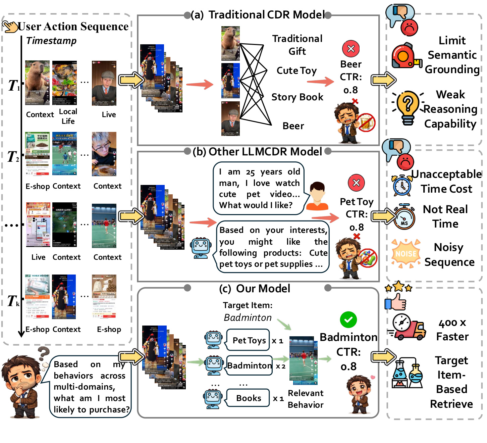
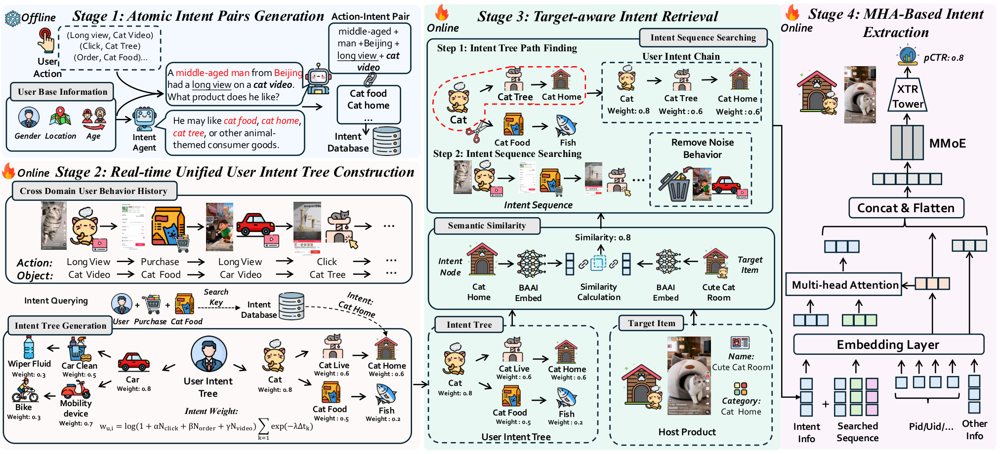
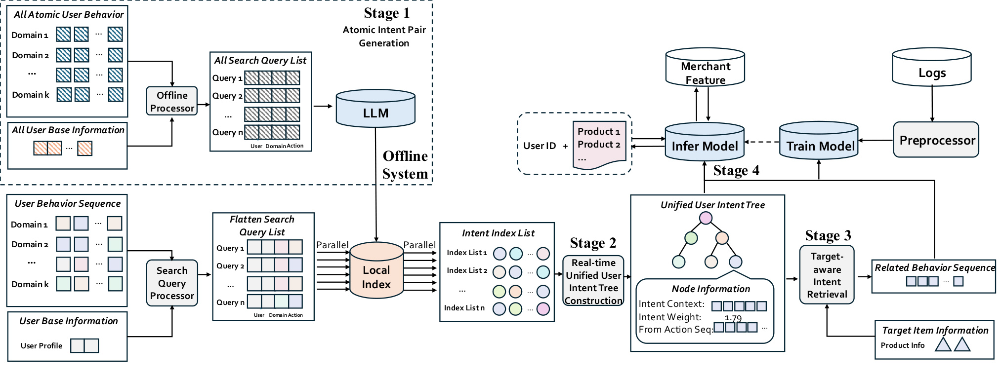
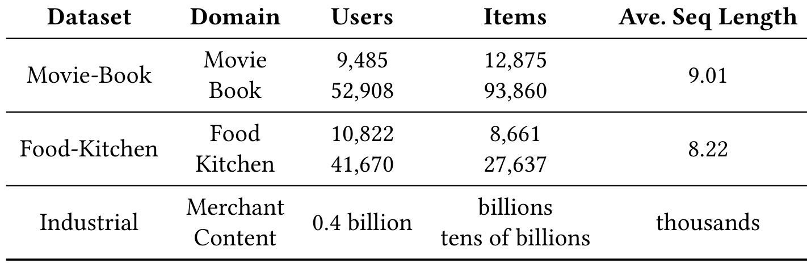
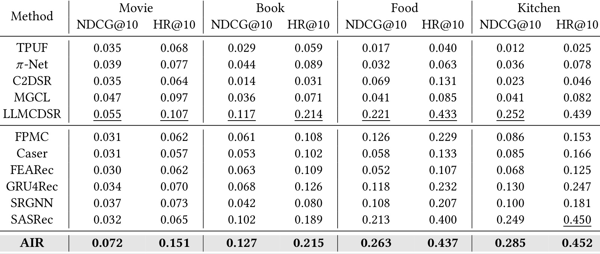
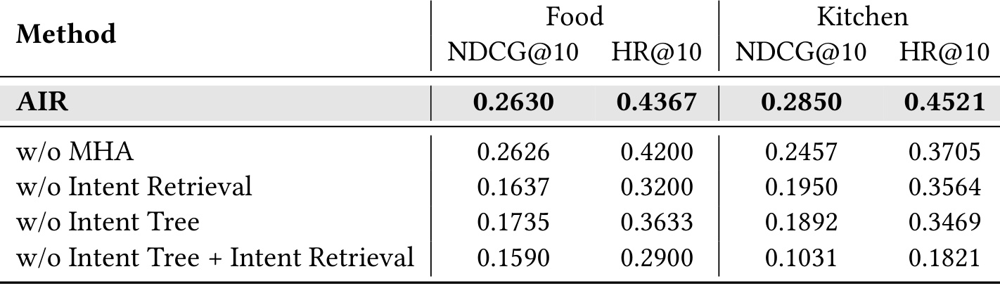
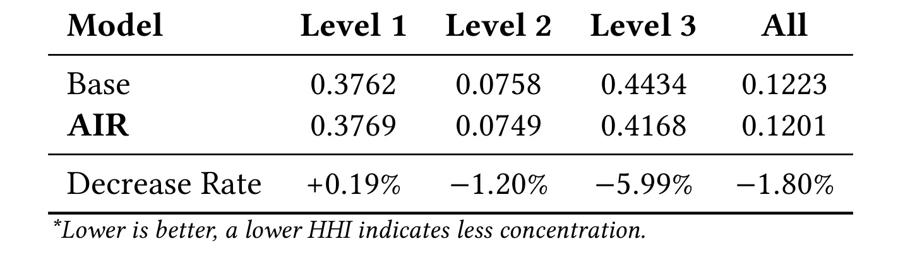
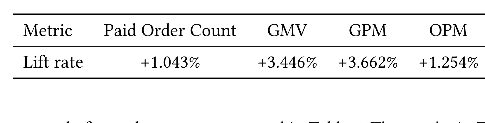
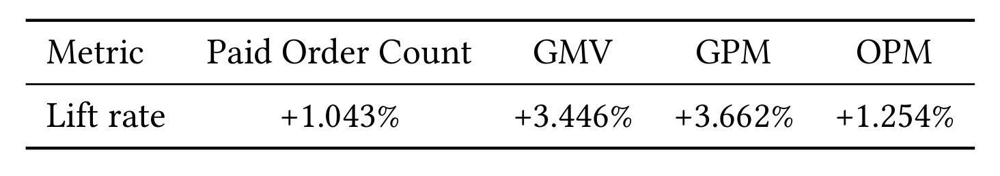

快手-AIR：把 LLM 语义搬到离线侧的工业跨域推荐框架
这篇论文的全名是 Atomic Intent Reasoning: Bringing LLM Semantics to Industrial Cross-Domain Recommendations，入口为 arXiv:2606.10357。论文作者包括 Zhuohang Jiang、Yuxin Chen、Shijie Wang、Haohao Qu、Jindong Zhou、Wenqi Fan、Li Qing、Dongxu Liang、Jun Wang，作者机构覆盖香港理工大学与快手，论文页脚显示为 KDD 2026 工作。本文关注的不是通用 LLM4Rec 玩具设定，而是快手电商短视频场景中的内容域到商品域推荐：用户在内容侧看视频、看直播、点击或停留，这些行为需要转化为商品侧购买意图。AIR 的核心想法是把 LLM 的语义理解与推理提前放到离线阶段，生成可复用的 atomic intent 表示；在线阶段只做检索、组合、目标感知筛选和轻量注意力融合，从而在保留语义一致性的同时满足工业推荐的延迟与吞吐约束。论文报告直接调用 Qwen3-4B 约 8 秒，而 AIR 的在线推理约 20.134 ms，对应约 400 倍吞吐提升；快手电商线上 A/B 中报告 GMV +3.446%。本轮未核验到独立开源代码仓库，因此以下记录以论文正文、图表和 arXiv 页面为事实来源。
1. 背景和问题
跨域推荐在电商内容平台里不是一个抽象的 benchmark 问题。快手这样的平台天然有内容域、直播域、短视频域、电商商品域等多种行为空间，用户先在内容侧表达兴趣，再在电商侧发生点击、下单或支付。平台要解决的问题是：如何从内容侧复杂而嘈杂的行为中推断出商品侧的购买意图，并把这种推断用于 CTR 预测、精排或更靠后的商业排序目标。传统跨域推荐通常依靠共享 embedding、图结构、行为 co-occurrence 或 ID 层面的迁移。这类方法在共现关系足够强时有效，但它们本质上仍在处理“谁和谁一起出现”以及“哪个用户或物品 ID 在两个域之间能对齐”，很难解释内容行为为什么指向某个商品意图。
论文把这个问题进一步放到工业约束下看。第一，内容到电商之间存在明显语义鸿沟。用户长时间观看宠物视频，可能是在表达“喜欢猫”“想买猫粮”“正在布置宠物房间”，也可能只是娱乐消费；传统 ID 迁移只看到视频、用户、商品之间的共现，很难把这种意图链条拆清。第二，用户跨场景行为序列非常长，且包含大量对当前候选商品无关的噪声。一个高活跃用户可能同时看体育、家居、汽车、宠物和本地生活内容，而当前候选商品只和其中一小段行为有关。第三，LLM 的语义理解能力确实适合解释“行为到意图”的映射，但在线推荐链路的延迟预算通常是毫秒级，直接把候选商品和用户长历史喂给 LLM 几乎不可能。
这也是 AIR 的主要定位：它不是把 LLM 直接接进在线排序，也不是简单把 LLM 生成的用户画像离线刷新一次后当静态特征使用。静态画像的问题是时效性差，尤其内容消费兴趣变化快；实时 LLM 的问题是成本和延迟不可接受；只靠 ID 迁移的问题是语义不够细。AIR 试图做一个中间方案：离线让 LLM 对单个行为事件进行语义解释，把“行为-意图”拆成稳定、可索引、可复用的原子单元；在线针对候选商品从这些原子意图中检索相关证据，并组合成短的目标感知意图链。这样在线阶段看起来像在做 LLM 推理，但真实计算是局部检索、树结构聚合和 MHA 融合。

Figure 1 把论文的动机讲得很直接。左侧是跨域用户行为序列，同一个用户在不同时间点产生内容、直播、电商上下文里的行为；传统 CDR 模型把这些行为送入普通推荐模型后，能捕捉一些共现关系，但右侧标出的问题是语义 grounding 弱、推理能力弱。中间的其他 LLMCDR 模型把用户行为转成自然语言再让 LLM 生成偏好判断，语义更强，但对应右侧的问题是时间成本不可接受、无法真正实时、长序列噪声大。AIR 放在第三行：它不让 LLM 在线处理完整长历史，而是把行为先转成意图单元，再针对当前 target item 检索相关行为，因此图中强调 400x faster 和 target-item-based retrieve。这个图不是普通宣传图，它定义了 AIR 的工程边界：要证明自己成立，AIR 必须同时解决语义迁移、长序列压缩、在线延迟和目标相关性四件事，缺任何一件都只是已有 LLM4Rec 或跨域推荐方案的变体。
从推荐系统角度看，AIR 的有趣之处在于它把“跨域迁移”重新表述为“目标条件下的证据检索”。传统 CDR 更像是把内容域行为整体迁到商品域；AIR 则认为长历史里只有一部分行为对当前候选商品有用，模型必须先找到这些意图节点和支持行为，再把它们送给下游 CTR 或排序模型。这个思路接近检索增强推荐：离线构建知识化索引，在线围绕目标商品取证。区别是 AIR 的索引不是文档，而是由 LLM 生成的行为意图路径，路径还被组织到统一的 user intent tree 中。
还有一个容易被忽略的背景是，内容平台里的行为粒度往往比商品域更碎。一次长观看可能只说明用户被封面、剧情、主播或生活场景吸引，不能直接等同于购买需求；但如果多个行为在语义树上汇聚到同一商品意图，就能为候选商品提供更强证据。AIR 把这种碎片化行为先拆成原子意图，再在目标商品条件下重组，正是为了降低“全历史平均画像”带来的语义稀释。
论文的业务场景也决定了评价指标不能只看离线 NDCG 和 HR。AIR 声称面向快手电商的真实短视频场景，线上要看 paid order count、GMV、GPM、OPM 等商业指标；此外还要看 category HHI 这种衡量类目集中度的指标，因为跨域意图如果只强化热门类目，可能提高短期点击但损害探索和长尾覆盖。因此这篇论文的证据链包含三层：公开 Amazon 跨域序列推荐 benchmark 证明方法不是只在内部数据上有效；消融与 HHI 分析解释 intent retrieval、intent tree、MHA 的作用；快手线上 A/B 证明这种离线 LLM 加在线检索的架构能在真实流量中带来商业增益。
2. 方法
2.1 四阶段架构：把语义推理拆成可服务的计算图
AIR 的方法部分按四个阶段组织：Atomic Intent Pair Generation、Real-time Unified User Intent Tree Construction、Target-aware Intent Retrieval、MHA-based Intent Extraction。第一阶段在离线侧运行 LLM，把单个用户行为解释成一个或多个 coarse-to-fine 的意图路径；第二阶段在线把用户近期行为对应的意图路径聚合成统一意图树，并给树节点维护权重和证据对象；第三阶段针对当前候选商品，从意图树中找目标相关的 intent chain，并检索支持行为序列；第四阶段把检索到的意图链和其他用户、商品特征通过多头注意力融合，交给下游 XTR Tower、MMoE 和排序模型。论文的关键不是某个新损失函数，而是把 LLM 语义压成可以被工业推荐链路调度的数据结构。

Figure 2 是方法部分的主图。左上 Stage 1 显示离线 LLM 根据用户基础信息、动作和对象描述生成 action-intent pair，例如“中年男性在北京长观看猫视频”被解释成可能喜欢猫粮、猫窝、猫树等意图；这些意图被放入 intent database。左下 Stage 2 把跨域行为历史构造成 user intent tree，树节点既有层级关系，也有权重；图中给出权重公式，说明点击、下单、长观看和时间衰减会共同影响节点重要性。中间 Stage 3 针对 target item 做语义相似度计算，先找相关 intent node，再沿树路径形成 user intent chain，并去掉和目标无关的噪声行为。右侧 Stage 4 用 MHA 把 intent info、searched sequence、Pid/Uid 等特征融合进 XTR Tower 和 MMoE。图中最值得注意的是，AIR 不把所有内容侧行为都送入排序模型，而是通过 target item 把检索范围收窄到当前候选商品相关的意图链。
这个四阶段拆分有两个工程含义。其一，LLM 只在离线阶段生成可缓存、可索引的语义结构；它不参与每次在线请求。其二，在线阶段不是简单查一个用户画像，而是按目标商品动态查询 intent tree。也就是说，同一个用户面对猫窝、羽毛球拍、汽车清洁用品时，AIR 可以取出不同意图链和不同支持行为。这样既避免静态画像过粗，也避免实时 LLM 过慢。更具体地说，AIR 的“语义推理”被拆成三类轻量操作：向量相似度找节点、树路径追溯和行为序列检索、注意力融合。
2.2 Atomic Intent Pair Generation：从行为事件到意图路径
第一阶段处理单个原子行为事件。论文用 e 表示一个用户行为事件，它包含 action、object 和 user/context 信息，例如 long view 一个猫视频、click 一个猫树商品、order 一个猫粮商品。LLM 的任务不是直接预测 CTR，而是把这个事件解释为若干条 intent path。每条 path 是从粗粒度到细粒度的类目或意图链，例如从宠物到猫到猫窝，或者从汽车到清洁到玻璃水。论文用下面的形式定义事件 e 对应的意图路径集合：
符号解释：e 是一个原子行为事件；(\mathcal{P}(e)) 是 LLM 为该行为生成的 intent path 集合；m 是该行为可能对应的意图路径数；p 是其中一条路径；(c_\ell) 是第 (\ell) 层的意图类别或概念节点；k 是路径深度。这个公式体现了 AIR 对 LLM 的使用方式：LLM 输出的是可结构化存储的路径，不是一次性自然语言解释。路径一旦生成，就可以在后续在线链路中被反复检索和组合。
论文随后把不同 action 的 intent path 分开缓存。这个设计很重要，因为点击、下单、长观看、普通曝光或视频停留的信号强度不同，同一个意图节点由不同动作支持时，下游应有不同权重。对应公式是：
符号解释：a 是动作类型；(a_e) 是事件 e 的动作；(\mathcal{P}_a) 是所有动作类型为 a 的事件生成的意图路径并集。这个缓存可以理解为“按动作分桶的语义倒排索引”。如果一个用户既长观看猫视频又购买猫粮，AIR 不会把两者混成同质行为，而是在后面构树时保留 action-specific statistics。
这一步的另一个细节是“single-behavior atomic intents”可以组合近似复杂多行为序列背后的 latent intent。论文没有把整段用户历史直接交给 LLM，而是让 LLM 对单个行为做稳定解释。这样做牺牲了一部分跨事件联合推理能力，但换来了可缓存性、可更新性和成本控制。对工业系统来说，这个取舍合理：离线可以批量处理历史行为，新增行为也可以异步增量生成；在线不需要等待 LLM 重新理解整段历史。
2.3 Unified User Intent Tree：把多动作意图聚成可加权树
第二阶段把 action-specific intent paths 聚合成统一的 user intent tree。树中每个节点代表一个不同抽象层级的意图概念，边代表父子层级关系。比如“宠物”下面可以有“猫”，再下面有“猫粮”“猫窝”“猫树”；“汽车”下面可以有“清洁”“玻璃水”。AIR 给每个节点维护 action-specific statistics，并通过点击、下单、长观看等动作计数和时间衰减计算偏好权重。论文给出的核心定义是：
符号解释：u 是意图树中的一个节点；(w_u) 是该节点的偏好权重；(N(u)) 是多动作加权后的节点命中强度；(N_{\text{click}}(u))、(N_{\text{order}}(u))、(N_{\text{view}}(u)) 分别是点击、下单、观看或长观看对节点 u 的支持次数；(\alpha,\beta,\gamma) 是动作权重系数；(n_u) 是支持节点 u 的事件数量；(\Delta t_k) 是第 k 个支持事件距离当前时刻的时间间隔；(\lambda) 控制时间衰减强度。对推荐工程来说，这个公式的语义很直观：下单比普通浏览更强，近期行为比很久以前的行为更强，高频行为要通过对数项防止头部意图过度支配。
除了权重，节点还保存支持它的行为对象 ID。论文定义为：
符号解释：(\mathcal{I}_a(u)) 是动作类型 a 下支持节点 u 的对象集合；(o_i) 是某个视频、商品或其他行为对象；(e_i) 是包含动作、对象和用户信息的事件；如果事件 (e_i) 的某条 intent path 包含节点 u，则这个对象会成为节点 u 的显式证据。这个定义让 AIR 的检索结果可解释：系统不仅知道用户可能有“猫窝”意图，还能追溯哪些视频、商品或直播行为支撑这个判断。
在线构树时，用户级意图表示来自近期行为历史：
符号解释：(\mathcal{H}{\text{user}}) 是用户近期行为历史；(\mathcal{P}) 是这些行为对应的意图路径并集。这个公式把 AIR 与离线静态画像区分开来：它可以按近期历史动态装配用户意图树，同时不需要在线调用 LLM。树结构还让推荐系统能同时保留粗粒度和细粒度偏好。粗粒度节点有助于冷启动和迁移，细粒度节点有助于目标商品匹配；两者通过同一棵树相连。}
2.4 Target-aware Intent Retrieval：围绕候选商品检索证据
第三阶段是 AIR 的推荐味道最强的部分。许多用户画像方法会把用户兴趣压成一个向量或一组长期标签，但 AIR 认为候选商品 v 不同，应该检索不同的 intent chain。论文先为 target item 构造 embedding (e_v)，它来自标题、类目、属性，也可以加入多模态信号；同时为意图节点 u 构造 embedding (e_u)，它来自节点规范名和语义扩展。目标商品和意图节点的相关性用余弦相似度：
符号解释：u 是意图节点；v 是候选商品；(\mathbf{e}_u) 是意图节点 embedding；(\mathbf{e}_v) 是商品 embedding；(s(u,v)) 是目标商品与意图节点的语义相关性。论文实验配置中提到用 BAAI/bge-m3 做意图到电商标签或目标语义空间的映射，这也说明 AIR 的在线检索不是字符串匹配，而是语义向量检索。
根据相关性，AIR 从 intent tree 中选出小规模候选节点集合：
符号解释：(\mathcal{T}) 是用户意图树；M 是保留的节点数量；(\mathcal{U}_v) 是对候选商品 v 最相关的一组节点。选中节点后，系统沿树向上追溯祖先，构造从粗到细的 intent chain。这样做的好处是保留“猫科宠物到猫窝”这种层次，而不是只保留一个末端标签。
论文进一步用目标相关性和用户偏好强度一起给候选链打分：
其中 (g(w)) 可以取 (\log(1+w))。符号解释：(w_u) 是节点 u 的用户偏好权重；(g(\cdot)) 是单调映射，避免高频权重无限放大；score 同时要求节点与商品相关、也被用户行为强支持。这个乘积形式很朴素，但它抓住了推荐中的两个必要条件：只相关但用户没表现过兴趣不够，只高频但和当前商品无关也不够。
完成节点和路径选择后，AIR 会做 intent sequence searching：对每个链上节点，从缓存的行为对象集合中检索支持证据，形成短的目标相关行为序列。这个过程正是图 2 中“remove noise behavior”的含义。对一个喜欢宠物和汽车的用户，如果候选商品是猫窝，汽车清洁相关行为会被过滤；如果候选商品是玻璃水，宠物行为就不再主导。相比把全部历史截断给模型，target-aware retrieval 更接近“按商品取证”。
2.5 MHA-based Intent Extraction：把意图链送进排序模型
第四阶段把检索到的 intent chain 转成下游模型可用的特征。论文设 target item 的 query vector 为 (q_v)，检索到的意图链 token embedding 为 (X=[x_1;\dots;x_L])，其中 token 可以融合 action/source/time 等信息。多头注意力计算目标条件下的意图摘要：
符号解释：(\mathbf{q}_v) 是候选商品作为 query 的向量；(\mathbf{X}) 是检索出的 intent-chain token 序列；(\mathrm{MHA}) 是多头注意力；(\mathbf{z}_v) 是目标感知的用户意图表示。这里的 query 是商品，key/value 是用户相关意图证据，因此注意力本质上在问：当前商品应该关注用户意图链中的哪些节点和哪些支持行为。
论文图里把 (\mathbf{z}_v) 和 intent info、searched sequence、Pid/Uid 等特征一起进入 embedding layer、concat and flatten、MMoE 和 XTR tower。这说明 AIR 并不替代已有推荐模型，而是提供一个语义增强特征通道。它的部署门槛相对可控：离线侧增加 LLM 生成和索引构建；在线侧增加检索、树聚合和 MHA 特征融合；底层排序系统仍可以沿用已有多任务或精排框架。
从工程视角看，MHA 这一步的价值不在于“注意力很强”，而在于它把 target-aware retrieval 的结果变成可微、可训练、可和其他特征联合建模的表示。若只把检索到的 intent chain 当作稀疏标签或规则特征，模型很难学习不同商品、不同用户、不同动作证据之间的交互；MHA 允许模型在粗粒度类目、细粒度偏好、行为来源和时间信息之间分头建模。
2.6 Deployment Serving Split：离线 LLM 与在线检索的系统边界
论文第 4 节明确讨论部署。工业推荐和广告系统要服务海量请求，延迟预算通常是几十到几百毫秒，直接部署 LLM user intent modeling 非常困难。AIR 的部署结构是：离线侧处理 logs、user profile、merchant feature 和所有 atomic user behavior，通过 LLM 生成 atomic behavior-intent pairs，再把它们结构化、索引化、存储为本地可查的 key-value 或 local index；在线侧 search query processor 把用户行为序列分解成轻量 intent query，并行查询 local index，实时构造 unified user intent tree，再针对 target item 做 retrieval，最后把 related behavior sequence 和 node information 送给 infer model。

Figure 3 对应部署图。左半边的 offline system 用 LLM 处理全量原子行为和用户基础信息，生成 all search query list，并写入 local index；右半边在线阶段从 user behavior sequence 和 user base information 出发，经 search query processor 得到 flatten search query list，再并行访问 intent index list。之后系统实时构造 unified user intent tree，其中 node information 包含 intent context、intent weight 和 from action sequence；target-aware intent retrieval 再取出 related behavior sequence，最终和 target item information 一起进入 infer model。图中 train model、infer model、preprocessor 和 logs 的闭环也说明 AIR 已经被放入实际训练与服务链路，而不是孤立的论文模型。
这个 serving split 是 AIR 能做到 400 倍吞吐提升的关键。它并不是把 Qwen3-4B 蒸馏成一个小模型在线跑，也不是把 LLM 输出压成单个用户画像向量后每天刷新，而是把 LLM 推理结果拆成可以被 local index 查询的原子 intent。在线请求不需要生成文字、不需要长上下文推理、不需要多轮 chain-of-thought，只需要查索引、算相似度、聚合树节点和执行注意力层。这个结构天然适合高 QPS：意图生成可以离线批处理，索引查询可以并行，候选商品相关性可以局部计算，且每个用户只需要近期或有效行为的 intent paths。
但这个设计也有代价。第一，离线 LLM 生成的 intent path 质量会成为上游瓶颈。如果 LLM 对行为解释偏了，在线检索会在错误语义空间中找证据。第二，意图树的层级和电商标签体系需要稳定映射；如果平台类目、商品属性或内容语义快速变化，索引更新策略很关键。第三，目标感知检索的召回和截断参数会影响效果，Top-M 过小可能漏掉弱相关但有价值的意图，过大又会重新引入噪声和延迟。论文的实验表明这套系统有效，但实际复现或迁移到其他平台时，需要重点检查离线意图生成、标签映射和在线检索延迟三部分。
3. 实验结果
3.1 数据集与实验设置
论文同时使用公开 Amazon 跨域序列推荐数据和快手工业数据。公开部分构造了 Movie-Book 与 Food-Kitchen 两组跨域场景，遵循 leave-one-out protocol，对每个验证和测试实例采样 999 个 negative items，与 ground-truth positive item 一起排序，使用 HR@k 和 NDCG@k。为了让 LLM 能从文本描述中生成 open cross-domain interactions，缺少文本元数据的 item 被移除；Movie-Book 中用户和物品少于 10 次交互会被过滤，Food-Kitchen 阈值为 5。时间序列被按窗口切成 subsequence，Movie-Book 使用一个月窗口，Food-Kitchen 使用一年窗口，并按 80/10/10 做训练、验证、测试划分且保持时间顺序，避免未来信息泄漏。论文还说明 Action Intent Pair Generation 使用 Qwen3-4B 推断跨域意图，并用 BAAI/bge-m3 text embedding model 映射到电商标签。

Table 1 的重点是规模差异。Movie-Book 的用户数是 9,485，Movie items 12,875，Book items 93,860，平均序列长度 9.01；Food-Kitchen 的用户数是 10,822，Food items 8,661，Kitchen items 27,637，平均序列长度 8.22。工业数据则完全不同：merchant 与 content 域覆盖约 0.4 billion 用户，items 是 billions 到 tens of billions，平均序列长度是 thousands。这个表解释了为什么论文不能只做公开 benchmark：公开数据上的跨域序列长度很短，模型可以依赖传统序列推荐和 LLM 表征取得收益；而快手工业场景的行为量级和噪声量级都更大，真正瓶颈是怎么在长历史里找到当前商品相关证据。AIR 的 target-aware retrieval 和 tree compression 正是为这个量级差异服务。
3.2 公共 Amazon 数据集主结果
论文把 AIR 与两类 baseline 对比：跨域推荐模型包括 TPUF、pi-Net、C2DSR、MGCL、LLMCDSR；单域序列推荐模型包括 FPMC、Caser、FEARec、GRU4Rec、SRGNN、SASRec。表 2 覆盖 Movie、Book、Food、Kitchen 四个域，每个域报告 NDCG@10 和 HR@10。AIR 在所有列上都是最高或并列最高，尤其 Food 和 Kitchen 的绝对表现明显强于传统序列模型和 LLMCDSR。

Table 2 中 Movie 域 AIR 的 NDCG@10 为 0.072，HR@10 为 0.151；Book 域 NDCG@10 为 0.127，HR@10 为 0.215；Food 域 NDCG@10 为 0.263，HR@10 为 0.437；Kitchen 域 NDCG@10 为 0.285，HR@10 为 0.452。对比 LLMCDSR，AIR 在 Movie 上从 0.055/0.107 提到 0.072/0.151，在 Food 上从 0.221/0.433 提到 0.263/0.437，在 Kitchen 上从 0.252/0.439 提到 0.285/0.452。这里可以看出两个模式：第一，AIR 不只是超过非 LLM baseline，也超过已有 LLMCDSR，说明 atomic intent 和目标感知检索比粗粒度 LLM 特征更有效；第二，HR 的提升有时比 NDCG 更明显，尤其 Movie，这意味着 AIR 更容易把正确物品召到前 10，而排序位置的精细优化仍可能受下游模型和数据稀疏影响。
论文正文把这些提升解释为 LLM 生成的 atomic intent 能捕捉跨域语义依赖，intent tree 和 retrieval 又能避免把所有噪声行为塞进模型。这个解释与表格相符，但还需要注意：Amazon 数据集的序列远短于工业数据，所以这里更像是证明 AIR 的建模结构在标准 CDR 设置下不弱，而不是证明它已经解决工业长历史的全部难点。真正说明工业价值的证据要结合后面的延迟、HHI 和线上 A/B。
3.3 消融：Intent Retrieval 和 Intent Tree 是关键模块
表 3 做 Food-Kitchen 场景下的组件消融。比较对象包括完整 AIR、去掉 MHA、去掉 Intent Retrieval、去掉 Intent Tree、同时去掉 Intent Tree 和 Intent Retrieval。这个表对理解 AIR 很重要，因为它回答了一个自然质疑：效果是不是主要来自加了 LLM 生成特征和 MHA，而不是检索树结构本身？

Table 3 显示，去掉 MHA 后 Food NDCG@10 从 0.2630 微降到 0.2626，HR@10 从 0.4367 降到 0.4200；Kitchen NDCG@10 从 0.2850 降到 0.2457，HR@10 从 0.4521 降到 0.3705。MHA 对 Kitchen 影响更明显，但不是最大。去掉 Intent Retrieval 后，Food NDCG@10 降到 0.1637，Kitchen NDCG@10 降到 0.1950；去掉 Intent Tree 后，Food NDCG@10 为 0.1735，Kitchen NDCG@10 为 0.1892；两者同时去掉时 Food NDCG@10 只有 0.1590，Kitchen NDCG@10 只有 0.1031。这个结果非常清楚：AIR 的核心贡献不是简单把 LLM 意图塞进模型，而是检索和树结构一起控制“哪些意图在当前商品下应该被使用”。MHA 是融合器，Intent Retrieval 与 Intent Tree 才是筛选和组织证据的骨架。
从机制上看，去掉 Intent Retrieval 相当于模型失去目标商品条件下的行为筛选，长历史噪声会直接进入表示；去掉 Intent Tree 则失去粗细粒度层级和 action-weighted node aggregation，意图之间只剩平面集合。两者同时去掉后表现崩塌，说明 AIR 的树与检索不是两个独立 additive feature，而是耦合系统：树提供可检索的语义结构，检索决定当前目标商品读取树的哪部分。
3.4 类目 HHI：不仅看准确率，也看类目集中度
论文还分析了 AIR 对商品类目分布的影响，使用 Herfindahl-Hirschman Index 衡量类目集中度。HHI 越低，说明交互或推荐结果越不集中于少数类目，类目覆盖更分散。这个指标在电商推荐里有业务意义：如果一个模型只把流量推向头部类目，短期 CTR 或 GMV 可能提高，但长期会影响用户探索、商家生态和供给多样性。AIR 的目标感知检索如果真的能理解细粒度意图，就应该能够减少过度集中。

Table 4 显示 Base 与 AIR 在 Level 1、Level 2、Level 3 和 All 四个层级的 HHI。Level 1 上 AIR 从 0.3762 变成 0.3769，Decrease Rate 为 +0.19%，这不是改善；Level 2 从 0.0758 降到 0.0749，下降 1.20%；Level 3 从 0.4434 降到 0.4168，下降 5.99%；All 从 0.1223 降到 0.1201，下降 1.80%。最值得关注的是 Level 3 的改善最大，说明 AIR 更可能在细粒度类目层面降低集中度。这个结果和方法设计是一致的：atomic intent path 是 coarse-to-fine 的，target-aware retrieval 会在树中定位细粒度节点，因此它不只是告诉模型“用户喜欢宠物”，而是帮助模型区分猫粮、猫窝、猫树等更细类目。
不过这个表也提醒我们不要夸大。Level 1 没改善，说明 AIR 对大类目分布不是单调降低集中度；它更像是在已有大类目兴趣内重新分配细粒度子类目。因此如果业务目标是宏观类目探索，AIR 可能还需要和探索策略、供给约束或多样性 re-rank 结合；如果业务目标是从内容侧行为中识别更具体购买意图，Level 3 的改善更直接支持论文主张。
3.5 延迟、用户活跃度与线上表现
论文报告直接调用 Qwen3-4B 的推理延迟约 8 秒，而 AIR 把行为意图原子化和离散化后，在线延迟降到 20.134 ms，对应约 400 倍吞吐增益。这个数值与 Figure 1 和 Figure 3 的架构主张一致：LLM 计算搬到离线侧，在线侧只做 retrieval 和 composition。需要注意的是，20.134 ms 是 AIR 方案自身报告的在线处理延迟，不等于整条推荐链路端到端延迟；但对于一个需要嵌入工业排序系统的语义模块来说，它已经处于可讨论范围内。
论文还按用户活跃度做了 GMV uplift 分析。低活跃用户历史少，传统模型容易冷启动；高活跃和超高活跃用户历史很长，传统模型容易被噪声淹没。AIR 理论上应该同时帮助两端：对低活跃用户，LLM 生成的 intent tree 可以把少量行为扩展成语义更丰富的意图；对高活跃用户，target-aware retrieval 可以压缩长历史，只保留目标相关证据。

Table 5 的结果显示 Low、Mid、High、Ultra 四组用户 GMV lift 分别为 +4.32%、+2.46%、+8.04%、+7.21%。这组结果比单个平均 lift 更有信息量。低活跃用户 +4.32% 支持“语义补全和意图树缓解稀疏行为”的解释；High 和 Ultra 用户提升更高，说明 AIR 对长历史压缩和噪声过滤的价值更大；Mid 组提升相对较低，可能意味着中等活跃用户既不极度稀疏，也没有足够长的历史让 target-aware compression 发挥最大收益。若将来复现或上线类似系统，我会重点看每组用户的覆盖率、意图检索命中率、检索链长度和线上 latency 分布，因为这能判断提升来自语义扩展还是来自减少噪声。
最后是工业 A/B 测试。论文称 AIR 已部署于快手电商短视频场景，使用约 5.08% 平台流量与线上 baseline 对比，结果报告多项业务指标正向提升。

Table 6 给出 Paid Order Count +1.043%、GMV +3.446%、GPM +3.662%、OPM +1.254%。这里 GMV 与 GPM 的提升幅度高于 Paid Order Count，说明 AIR 不只是多带来订单，也可能提升了订单质量、商品匹配价值或客单/利润相关结构；OPM 正向则说明利润侧没有明显被 GMV 拉升掩盖。论文没有在表格中披露置信区间、实验天数、分桶策略、流量分层、是否有其他并发实验等细节，因此这些结果应理解为论文报告的线上收益，而不是可独立复核的业务结论。即便如此，这组表仍然是本文最重要的工业证据，因为公开 benchmark 很难体现 0.4 billion 用户、tens of billions items 和 thousands sequence length 下的真实压力。
4. 总结
AIR 的主要贡献可以概括为一句话：把 LLM 的语义推理能力产品化为离线可缓存的 atomic intent 表示，再用在线目标感知检索把这些表示转成当前候选商品相关的短证据链。这个设计比“在线调用 LLM”更现实，比“离线生成静态用户画像”更动态，比“传统 ID 跨域迁移”更有语义 grounding。论文的方法并不依赖复杂新损失，而依赖系统化的数据结构和服务边界：intent path、action-specific cache、unified user intent tree、target-aware chain retrieval、MHA fusion、offline-online serving split。
我认为这篇论文对工业推荐最有启发的是三点。第一，LLM 在推荐链路中未必应该作为在线推理模型存在，它可以作为离线语义编译器，把原始行为编译成可索引知识。第二，跨域推荐中的“迁移”应该尽量目标条件化：用户有很多兴趣，只有和当前商品相关的一部分才应该进入排序证据。第三，线上收益需要同时看业务指标、延迟和生态指标，AIR 报告 GMV/GPM/OPM 正向，同时 HHI 在细粒度层级下降，这比只报告 NDCG 更接近真实推荐系统的验收方式。
局限也很明确。论文没有充分展开离线 LLM intent generation 的错误分析，例如 LLM 把行为解释错、类目映射偏、不同动作语义冲突时如何修正；也没有披露在线检索参数、索引更新频率、缓存失效策略、服务资源开销和 A/B 置信区间。表 3 证明 intent retrieval 和 intent tree 很重要，但还不能告诉我们最优树深、Top-M、时间衰减系数和动作权重如何选择。对于快手之外的平台，另一个不确定点是电商标签体系和内容对象描述质量：如果商品文本、视频描述或类目层级不足，atomic intent 的可迁移性会下降。
如果要把 AIR 思路迁到其他推荐系统，我会先做三个检查。第一，离线阶段抽样审计 LLM 生成的 intent path，看它是否能稳定、细粒度地映射到业务标签，而不是生成漂亮但不可用的自然语言。第二，在线阶段记录 target-aware retrieval 的召回、链长、节点权重分布和延迟 P95/P99，确认检索没有把噪声重新带回模型。第三，A/B 不只看 CTR 或 GMV，还要分用户活跃度、类目层级、商家类型和长尾覆盖做拆分。AIR 的价值不在于“LLM 加推荐”这个口号，而在于它给出了一条相对清晰的工业路径：让 LLM 在离线语义层面工作，让在线系统继续保持可控、低延迟和可解释的推荐特征工程。